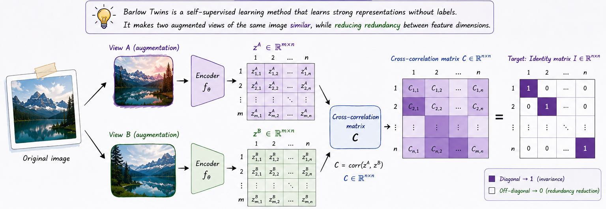
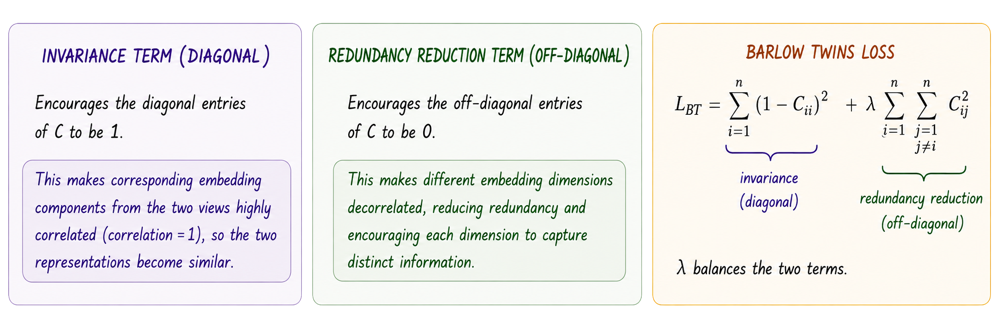

One of the central goals of machine learning is learning useful representations of data. Interestingly, the most effective systems for representation learning are often not purely generative models. Instead of reconstructing images pixel-by-pixel, many successful approaches focus on extracting compact and meaningful embeddings that preserve the semantic content of the input.
A natural way to achieve this is through joint embedding architectures. The core idea is simple: if two images represent the same underlying scene — even after corruption, augmentation, or transformation — their representations should remain similar. This principle is at the heart of Siamese neural networks [1], one of the earliest representation learning frameworks.
Siamese networks were originally introduced for tasks such as fraudulent signature detection. The architecture consists of two identical neural networks that share weights and process two input images independently. Rather than generating images, the networks produce embedding vectors that capture the semantic structure of the inputs.
During training, the model receives both positive and negative pairs. Positive pairs contain signatures from the same person, while negative pairs contain forged signatures. The objective is to make embeddings from positive pairs as similar as possible and embeddings from negative pairs as different as possible. Once trained, the model can compare the embedding of a new signature against a reference signature to determine whether it is authentic.
What makes this approach powerful is that the network learns meaningful internal representations without explicitly generating or reconstructing images.
Joint embedding methods, however, introduce an important challenge. If the objective is simply to maximize similarity between embeddings, the network may converge to a trivial solution where it outputs the same embedding vector for every input. This phenomenon is known as representation collapse.
Early Siamese approaches addressed this problem using what is now known as contrastive learning. By introducing both positive and negative examples, the model learns not only which samples should be similar, but also which should be distinct. Contrastive methods have been highly successful for both images and videos, but they often require large batch sizes, many negative samples, and significant computational resources.
“Because of the curse of dimensionality, in the worst case, the number of contrastive examples may grow exponentially with the dimension of the representation. This is the main reason why I argue against contrastive methods.”
— Yann LeCun, A Path Towards Autonomous Machine Intelligence [2]
At the same time, fully generative approaches were also found to be inefficient for self-supervised representation learning. This motivated researchers to search for alternative principles inspired by neuroscience.
One important inspiration came from the work of computational neuroscientist Horace Barlow, who hypothesized in 1961 that biological visual systems operate by reducing redundancy between neurons [3]. Later, researchers proposed applying this idea directly to representation learning.
In joint embedding architectures, the goal is already to make representations of different views of the same image similar. However, similarity alone is not sufficient, since it can still lead to collapse. Barlow’s idea suggests an additional constraint: reduce redundancy between different dimensions of the representation.
To measure this redundancy, the outputs of different neurons are compared using cross-correlation. By computing the correlations between all feature dimensions across two augmented views, we obtain a cross-correlation matrix. Ideally:
corresponding dimensions should be highly correlated,
different dimensions should remain decorrelated.
In other words, the cross-correlation matrix should approach the identity matrix. This simple but powerful idea became the foundation of Barlow Twins [4].

Barlow Twins learns representations using an encoder network \(f(\cdot)\) that maps an input image to an embedding vector. The encoder consists of a ResNet-50 backbone followed by a projection head composed of three linear layers with 8192 units each. The first two layers are followed by Batch Normalization and ReLU activations.
During training, we first sample a batch of images \(x\) from the dataset. For each image, we generate two randomly augmented views using a transformation function. These two views are denoted as \(x_1\) and \(x_2\). Both views are passed through the same encoder network to produce the embedding vectors:
\[ z_1 = f(x_1), \qquad z_2 = f(x_2) \]The embeddings are then normalized along the batch dimension rather than the feature dimension, which is more commonly used in other representation learning methods.
The Barlow Twins objective function is defined as:
\[ L_{BT} \triangleq \sum_i (1 - C_{ii})^2 + \lambda \sum_i \sum_{j \neq i} C_{ij}^2 \]where:
\(\lambda\) is a positive constant that balances the importance of the invariance term and the redundancy reduction term.
\(C\) is the cross-correlation matrix computed between the normalized embeddings \(z_1\) and \(z_2\).
The first term of the loss is the invariance term. It encourages the diagonal entries of the cross-correlation matrix to be equal to one. This makes corresponding embedding dimensions from two augmented views highly correlated, ensuring that the two representations remain similar.
The second term is the redundancy reduction term. It encourages the off-diagonal entries of the cross-correlation matrix to be close to zero. As a result, different embedding dimensions become decorrelated, reducing redundancy and encouraging each dimension to capture distinct information.
Barlow Twins achieves a top-1 accuracy of 73.2% under linear evaluation on ImageNet, making it competitive with state-of-the-art methods.
Unlike many visual representation learning methods that rely on very large batch sizes, Barlow Twins remains effective even with smaller batches, such as a batch size of 128. This suggests that the method is less dependent on large-scale batch statistics than contrastive approaches.
Barlow Twins benefits from a high-dimensional projector network. In contrast to methods such as SimCLR and BYOL, where performance can saturate as dimensionality increases, Barlow Twins continues to improve with wider projection heads. This highlights the importance of high-dimensional embeddings for redundancy reduction.
The method is sensitive to the choice of data augmentations. Removing certain augmentations leads to a drop in performance, showing that strong and diverse augmentations remain important for learning robust representations.
Barlow Twins provides a simple yet powerful approach to self-supervised representation learning. Instead of relying on negative samples or asymmetric training tricks, such as stop-gradient operations, momentum encoders, or predictor networks, it learns useful embeddings by making augmented views of the same image similar while reducing redundancy between feature dimensions.
Its main idea—pushing the cross-correlation matrix toward the identity—encourages representations that are both invariant and decorrelated. This makes Barlow Twins an important contribution to representation learning and a useful source of inspiration for later methods, including approaches for world models, where learning compact, structured, and non-redundant representations is essential for prediction, planning, and reasoning.
[1] Bromley, J., Guyon, I., LeCun, Y., Säckinger, E., & Shah, R. (1993). Signature verification using a" siamese" time delay neural network. Advances in neural information processing systems, 6.
[2] LeCun, Y. (2022). A path towards autonomous machine intelligence version 0.9. 2, 2022-06-27. Open Review, 62(1), 1-62.
[3] Barlow, H. B. (1961). Possible principles underlying the transformation of sensory messages. Sensory communication, 1(01), 217-233.
[4] Zbontar, J., Jing, L., Misra, I., LeCun, Y., & Deny, S. (2021, July). Barlow twins: Self-supervised learning via redundancy reduction. In International conference on machine learning (pp. 12310-12320). PMLR.